Префектура Киото · Фусими · кайсэки
Как ходить в киотский рётэй: кухня, посуда, обслуживание и сезон в каждой детали
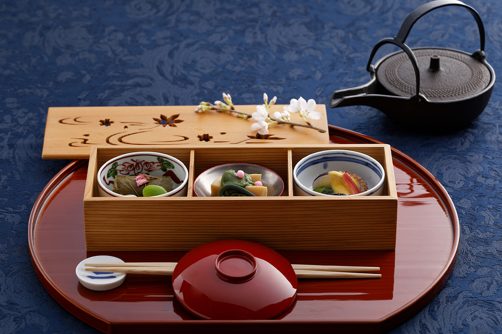
Киотский рётэй будит любопытство, как немногие места в Японии. Здесь подают кухню высшего класса, но ещё и показывают архитектуру, ремесло и умение принимать гостей, то есть японскую культуру целиком.
Зачем
Рётэй как школа японской культуры
Хозяин рётэй продумывает каждую мелочь, чтобы гостю было хорошо. А мастера, которые делают для него посуду, утварь и убранство, во многом живут здесь же, в Киото. Можно сказать, что культуру тут хранит весь город сразу.
Кто побывал в рётэй несколько раз, обычно начинает присматриваться к посуде, предметам интерьера, самому дому. Это естественно, и рётэй готов ответить на этот интерес с запасом: смотреть здесь есть на что. Время, проведённое среди того, что японцы растили и передавали веками, стоит больше, чем кажется. Разобраться, как устроен рётэй, нам помог Uosaburo, старый рётэй на юге Киото.
Истоки
Из чего сложилась киотская кухня
Киотская кухня, одна из ветвей японской, выросла из нескольких старых традиций. Первая из них дайкё-рёри, кухня пышных пиров аристократов эпохи Хэйан. Это была праздничная еда: сырое и сушёное подавали без приправ, и гости сами сдабривали их уксусом и солью. По её образцу воинское сословие создало хондзэн-рёри, церемониальную трапезу, где блюда приносили одно за другим на отдельных подносах. Такая подача чувствуется в киотской кухне до сих пор.
Юсоку-рёри это изящная церемониальная кухня императорского двора. Она тоже идёт от дайкё-рёри, но взяла кое-что и от воинской хондзэн-рёри. Сёдзин-рёри, еда буддийских монахов, распространилась, когда с материка пришли чай и дзэн-буддизм, и следовала запрету на мясо.
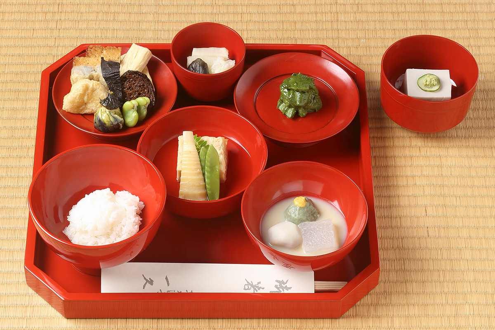
Особенно сильно на киотскую кухню повлиял кайсэки. Изначально так называли еду чайной церемонии, тя-кайсэки. Когда такие трапезы стали подавать в рётэй, закрепилось и общее название «кайсэки».
Интерьер
Дом, где всё подобрано к сезону
В старом рётэй даже столб в нише токонома бывает сделан с особой выдумкой. Такая страсть к строительству объясняется просто: хозяин рётэй сам человек культуры. Он вырос в рётэй, с детства знаком с чайной церемонией, и его вкус виден и в еде, и во всём доме.
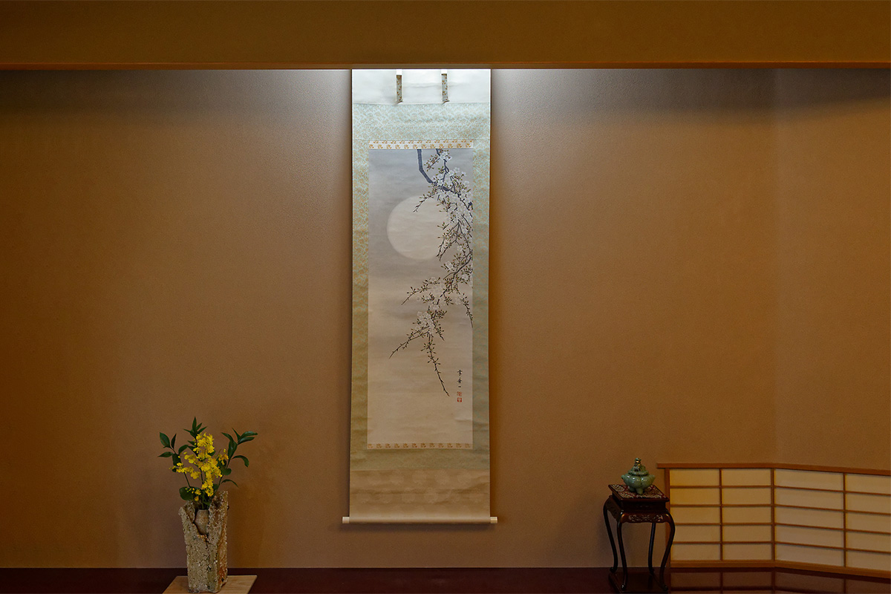
Свиток в токонома выбирают по времени года и по поводу встречи. Весной, например, могут повесить вечернюю луну над сакурой. Даже если за окном цветов ещё нет, весна всё равно приходит в комнату через свиток, и в этом одно из главных удовольствий рётэй. Почти всегда здесь стоят и сезонные цветы. Свиток и цветы меняют, и комната каждый раз становится такой, какой бывает только сейчас.
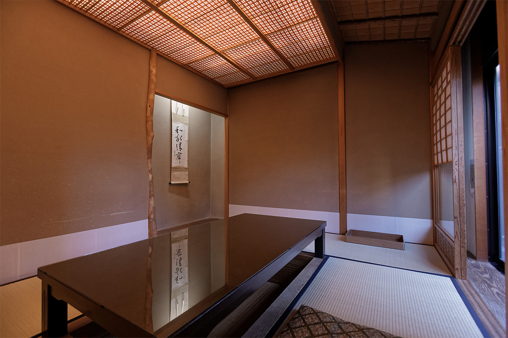
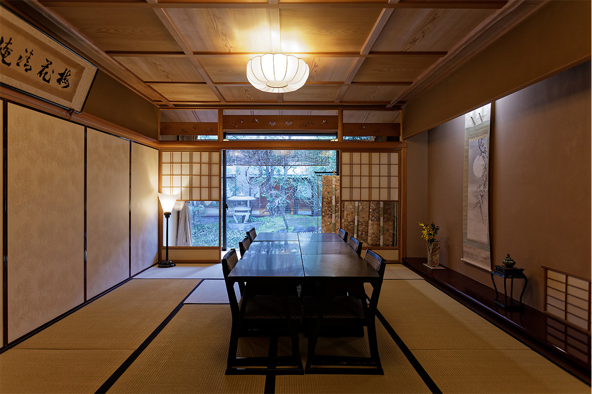
Старый рётэй называют лучшей инсталляцией Японии: ширмы, свитки, утварь здесь хранят как обычные вещи и достают, когда приходит их время. Некоторые рётэй работают в традиционных киотских городских домах матия.
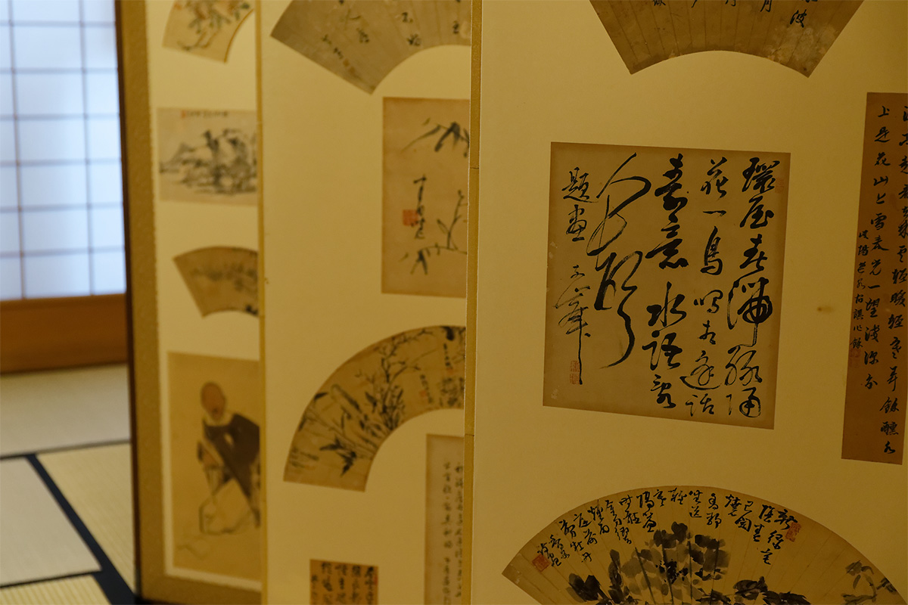
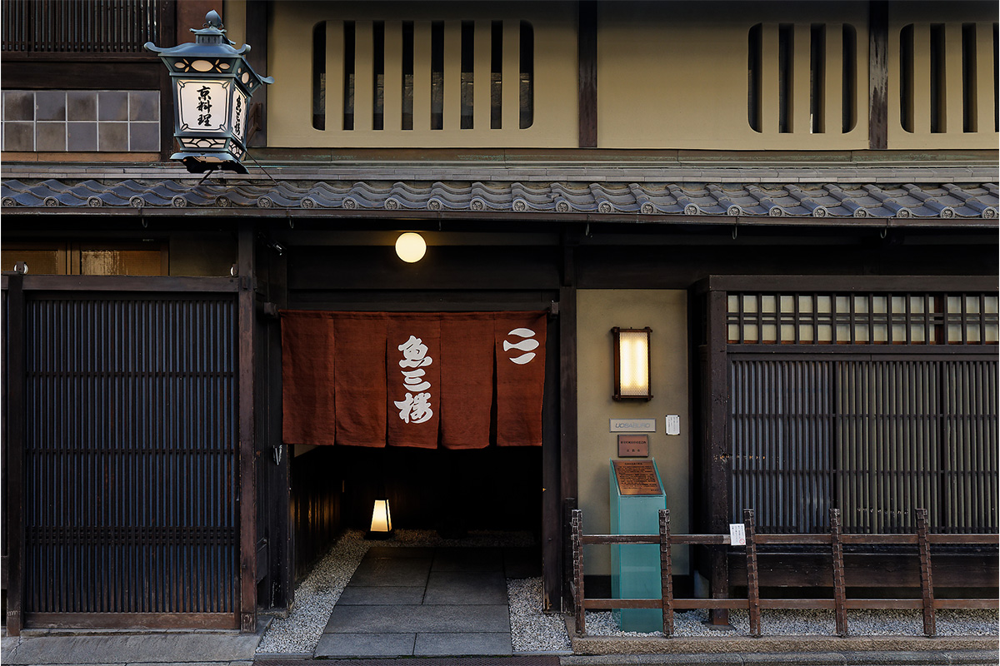
Принцип
Сначала красота
Киотскую кухню часто представляют набором старинных блюд. На деле она всегда меняется вместе со временем, и старое здесь постоянно встречается с новым. Иногда подают мясо, иногда жарят рыбу прямо перед гостем.
Но через любое меню, по словам Сигэо Араки, проходит одна линия: «Всё должно быть красиво». Араки девятый хозяин Uosaburo, рётэй, который около 250 лет работает в Фусими, на юге Киото.
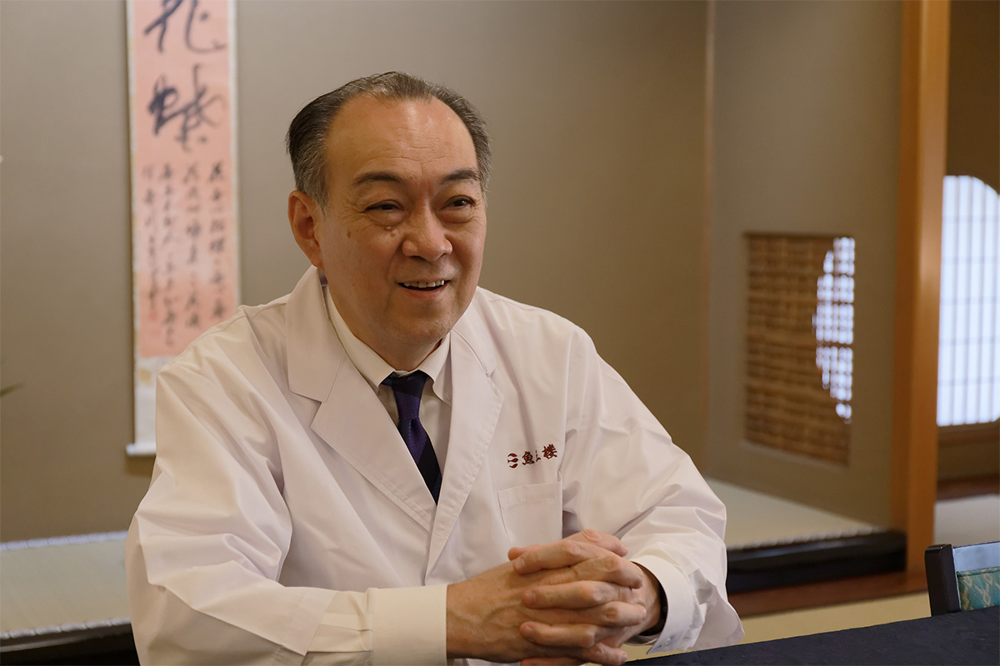
«Прежде всего блюдо должно быть красивым на вид, и в нём должен быть вкус. Киотские рётэй всегда очень этим дорожили»
Сигэо Араки, хозяин Uosaburo
Этот принцип касается всего, от нарезки продуктов до раскладки по тарелке. Каждый раз, когда меняется меню, курс выстраивают так, будто пишут картину.
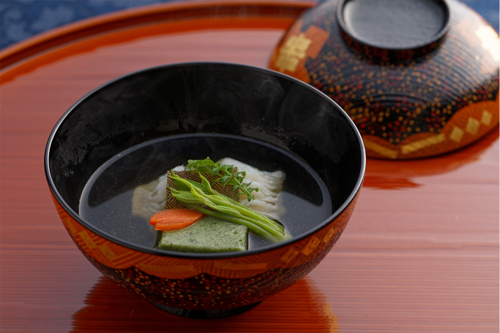
Иногда в курс добавляют блюдо в технике митатэ, когда еда изображает что-то связанное с праздником. На Сэцубун, праздник проводов зимы, это может быть демон и его железная дубина, а на День мальчиков ирис или самурайский шлем. Киотская кухня тесно связана с японской культурой, и чем лучше её понимаешь, тем яснее, что здесь едят не только ради вкуса.
С эпохи Мэйдзи в Киото каждый год проходит выставка киотской кухни: лучшие рестораны показывают на ней свои блюда. Это, пожалуй, лучшее доказательство того, что киотская кухня всю свою историю помнила: на неё должно быть приятно смотреть.
Меню
Как устроен кайсэки в рётэй
В курсе кайсэки обычно есть сакидзукэ (первая закуска), хассун, суп ванмоно, сашими оцукури, блюдо с огня якимоно, тушёные овощи такиавасэ и другие блюда. В тя-кайсэки, трапезе чайной церемонии, порядок подачи строго задан, а в рётэй он у каждого заведения свой.
Хассун тоже слово из чайной церемонии: там это закуска к сакэ из даров гор и моря. В рётэй под этим названием подают пёстрый набор того, что хорошо идёт к сакэ, и он возвещает новый сезон. Блюда митатэ часто появляются именно в хассуне.
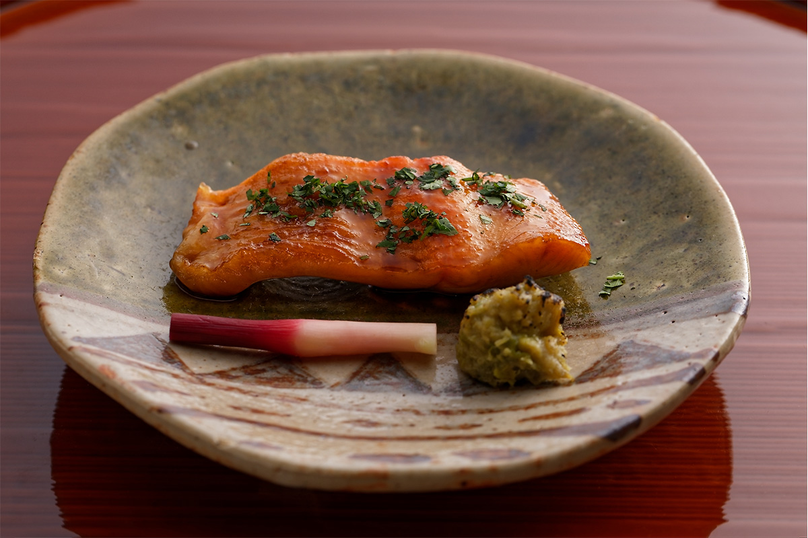
Ванмоно это бульон с главной начинкой из рыбы или рыбной пасты и овощами, его ценят за аромат. В оцукури обычно кладут две или три рыбы, и сырые морепродукты, красиво уложенные, становятся настоящим блюдом рётэй. На якимоно рыбу нанизывают на шпажки и, например, жарят с солью. В последние годы её иногда жарят прямо перед гостем.
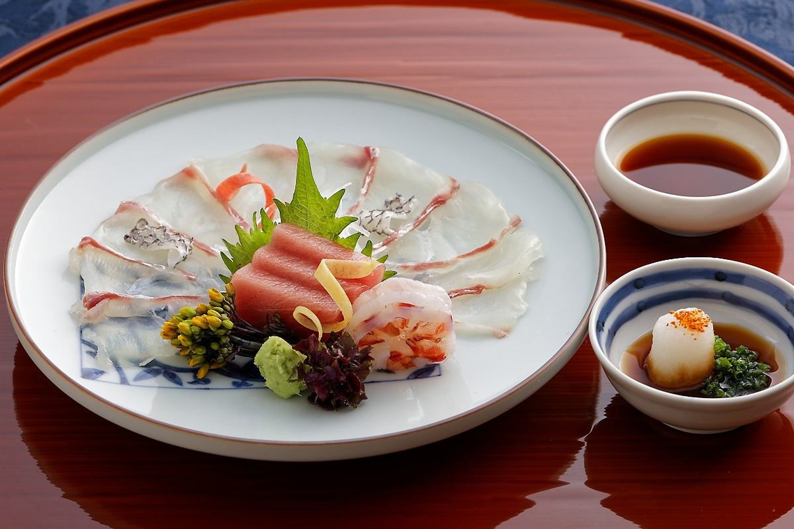
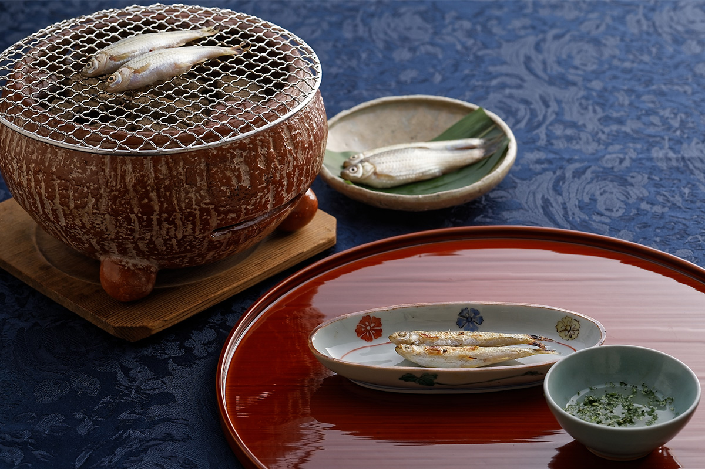
Такиавасэ это привычная японцам тушёная еда, только каждый продукт готовят отдельно и соединяют уже в чаше. Рис иногда бывает сезонным, его едят с соленьями ко-но-моно и супом томэван, это то же, что мисо-суп в обычном доме. На десерт мидзумоно раньше подавали свежие фрукты вроде дыни, а теперь чаще шербет или мороженое.
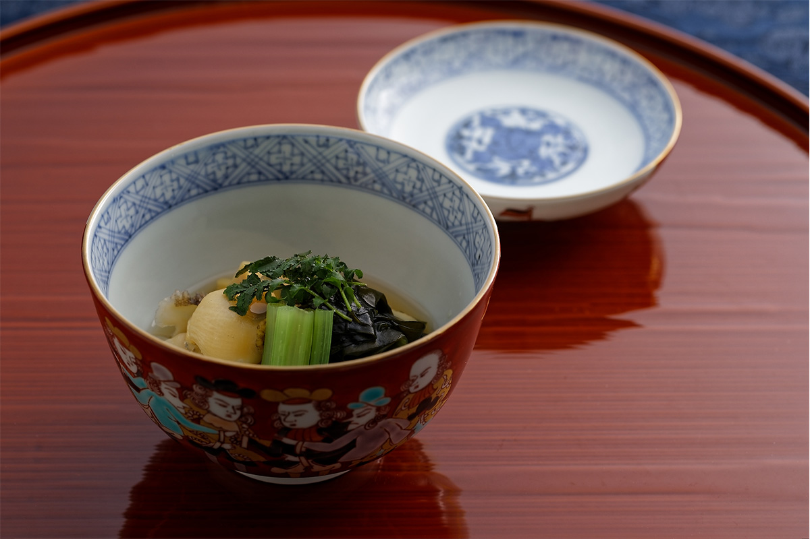
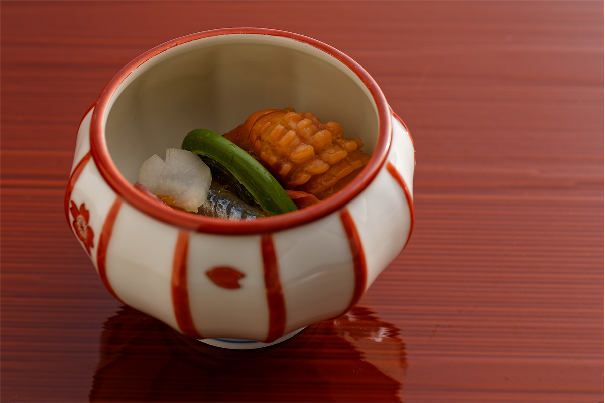
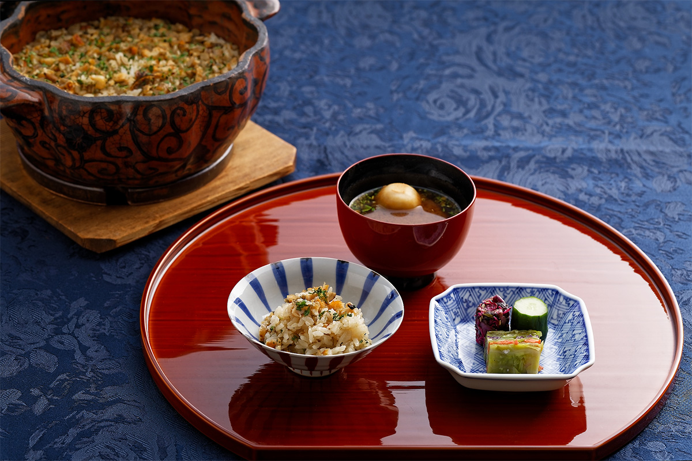
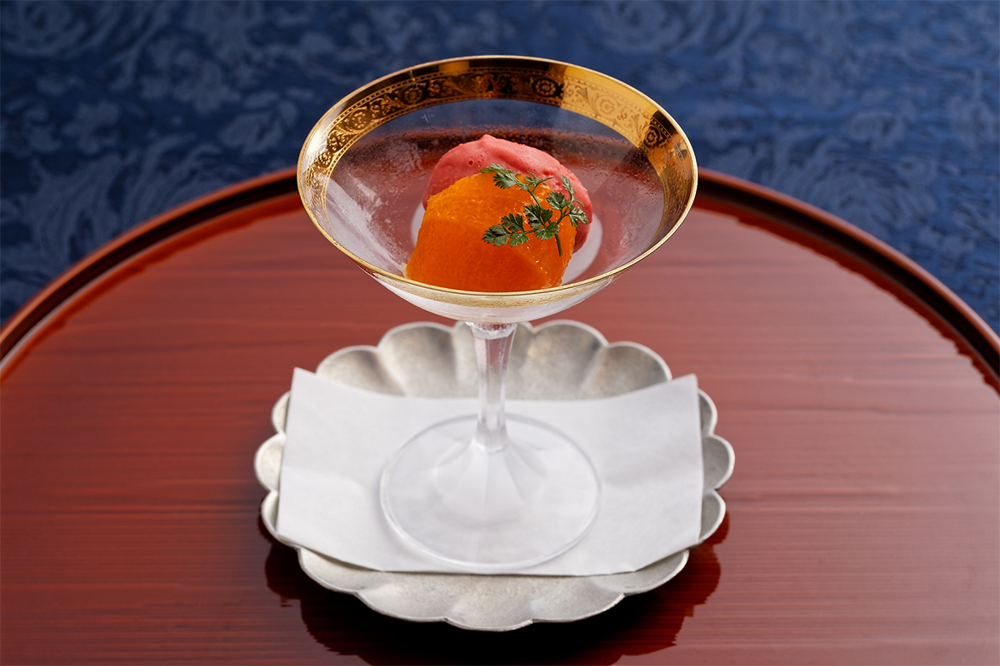
Посуда
Рётэй как место встречи с ремеслом
Подбор посуды для кайсэки, говорят, похож на то, как мастер чая собирает утварь для чайного собрания. Под замысел дня из синей росписи по фарфору, цветных эмалей, лака бережно подбирают предметы, чтобы весь курс был уравновешен. Бывает, что одна чаша, увиденная за ужином, открывает гостю всю глубину японского ремесла.
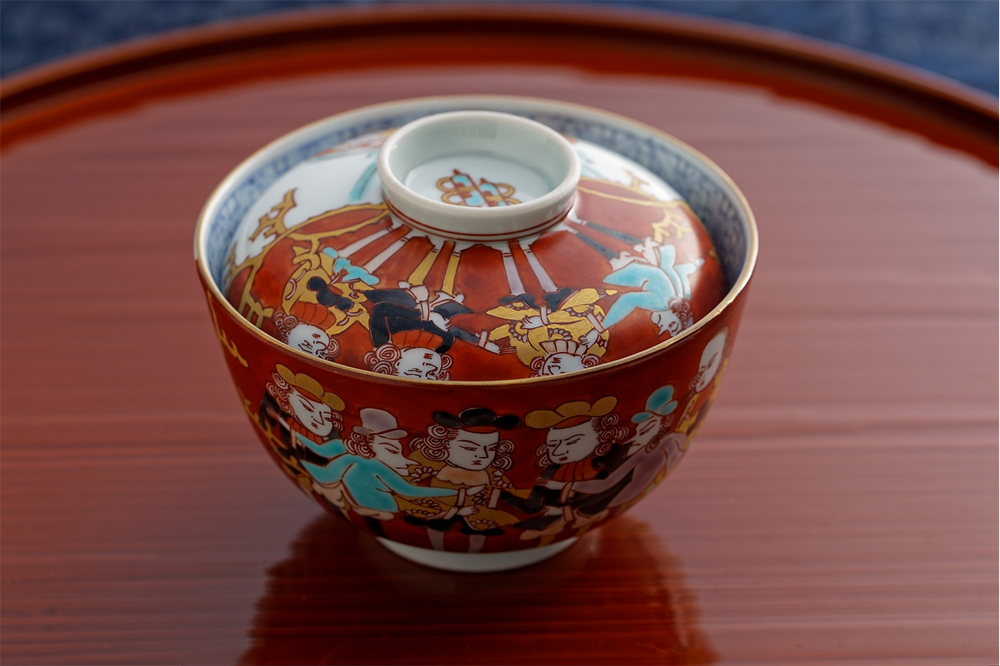
В рётэй собирают всё: от копий классических образцов до работ мастеров известных печей.
«Одной посудой пользуются тридцать, сорок лет, а другую как купили, так ни разу и не доставали. Даже если вещь не нужна прямо сейчас, хорошую работу мастера покупаешь и держишь у себя. Так рестораторы и живут с посудой»
Сигэо Араки
Говоря о посуде, нельзя забыть и торговцев утварью, догуя.
«Раньше догуя сам приносил вещи, подходящие именно этому заведению, и их покупали. Ту же вещь он другому ресторану уже не продавал: он отбирал и предлагал то, что подходит клиенту. Такие люди почти не на виду, но и сегодня без них культуры рётэй нет»
Сигэо Араки
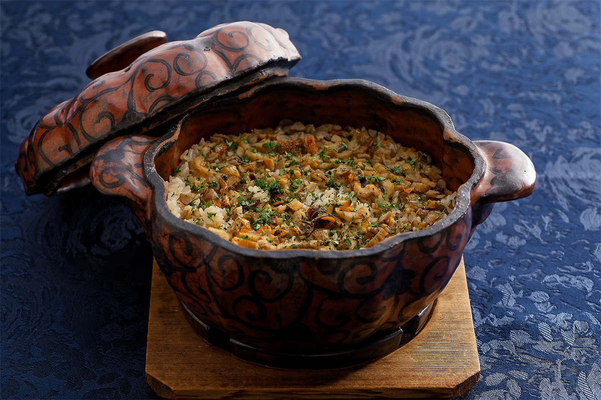
Обслуживание
Красота в каждом движении
Хозяйка рётэй, оками, и официантки накаи, которым доверено встречать гостей, двигаются красиво, даже когда просто здороваются. Они работают быстро, но сдержанно, потому что замечают каждую мелочь. Их манеры воплощают то чувство красоты и то умение принимать гостей, которыми японцы дорожили всегда. Шорох кимоно, который слышен каждый раз, когда оками или накаи проходят мимо, это неотъемлемый звук рётэй.
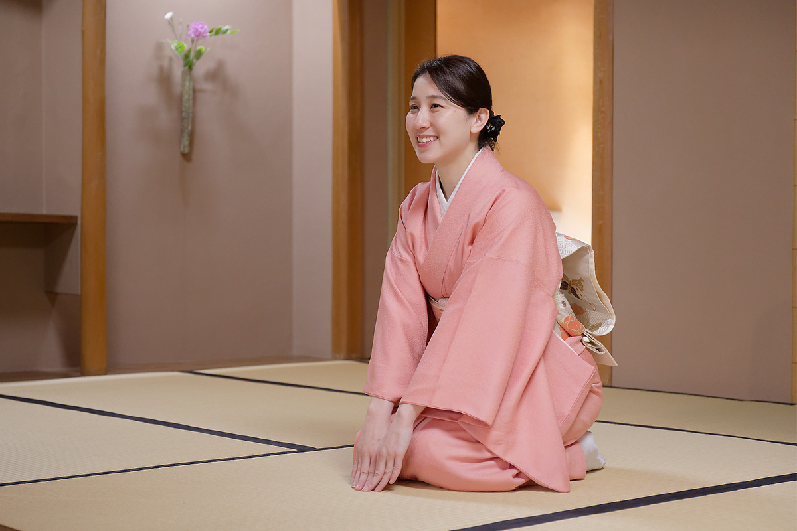
Продукты
Овощи старой столицы
Столица долго оставалась в Киото, и сюда со всей страны везли в дар рыбу и овощи. Из их рассады и семян, как говорят, и выросло здешнее огородничество. «Традиционных овощей Киото», которые выращивают с эпохи Мэйдзи, сегодня 35 видов. Лук кудзё-нэги бывает круглый год, репа сёгоин-кабу зимой, и эти овощи, выращенные с большой заботой, киотской кухне необходимы. Весной в меню почти обязательно есть блюдо из киотских побегов бамбука, а зимой классикой считается кабура-муси, блюдо на пару из сладкой зимней репы сёгоин-кабу.
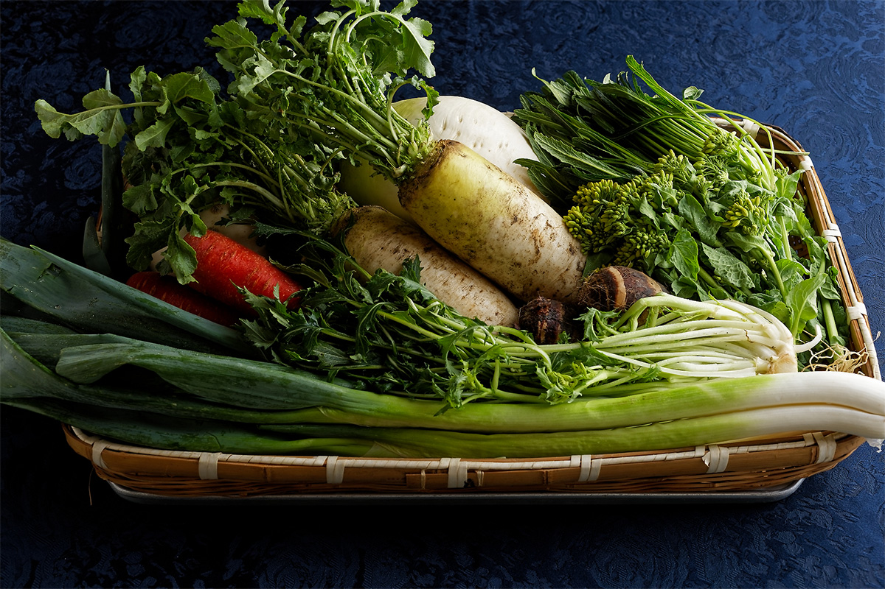
Дальше
Где узнать о культуре рётэй
В Киото есть несколько объединений поваров, которые хранят эту культуру, и в одно из них входит Uosaburo. Они помогали включить японскую кухню васёку в список нематериального наследия ЮНЕСКО и добиться признания киотской кухни нематериальным культурным достоянием. Эти объединения регулярно устраивают мероприятия о киотской кухне и японской культуре, расписание есть на их сайтах: kyo-ryori.com, kyoto-mebaekai.com, culinary-academy.jp.
Uosaburo
- Адрес
- префектура Киото, Киото, район Фусими, Кёмати, 3-187
- Телефон
- +81 75-601-0061
- Часы работы
- 11:30–14:30 (последний вход 13:30), 17:00–22:00 (последний вход 19:30)
- Выходные
- вторник
- Сайт
- uosaburo.com
Фото: Тосихико Такэнака.